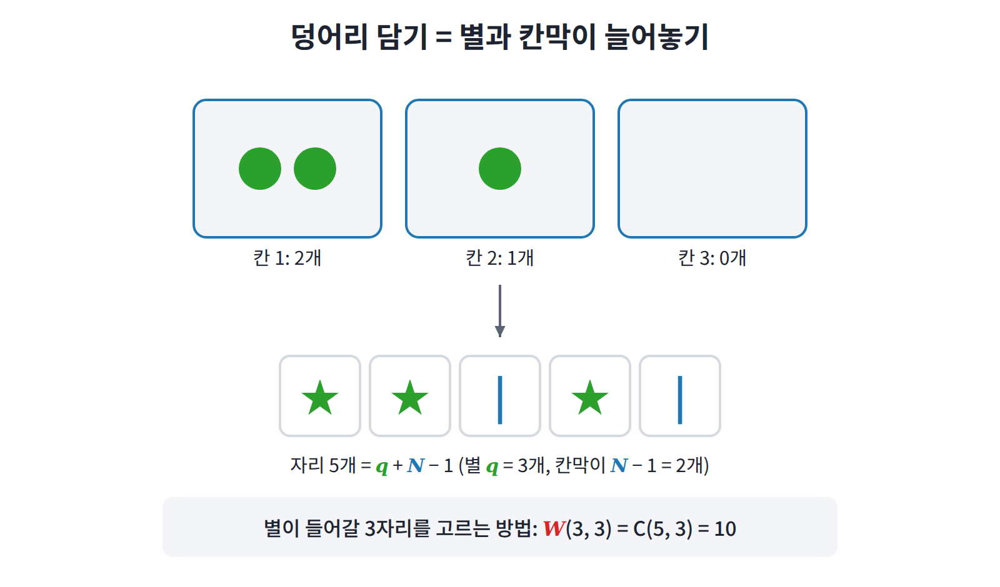
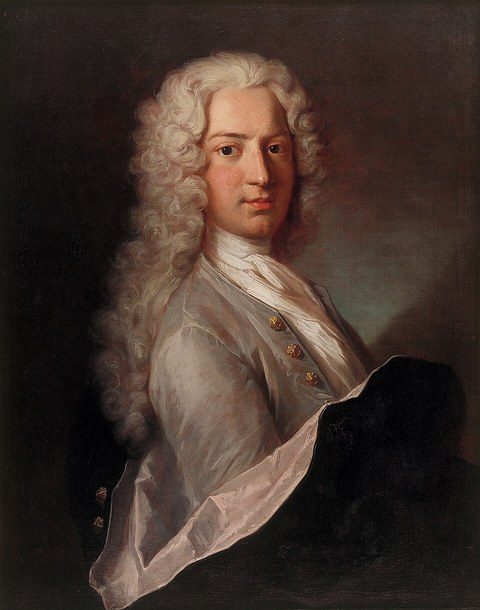
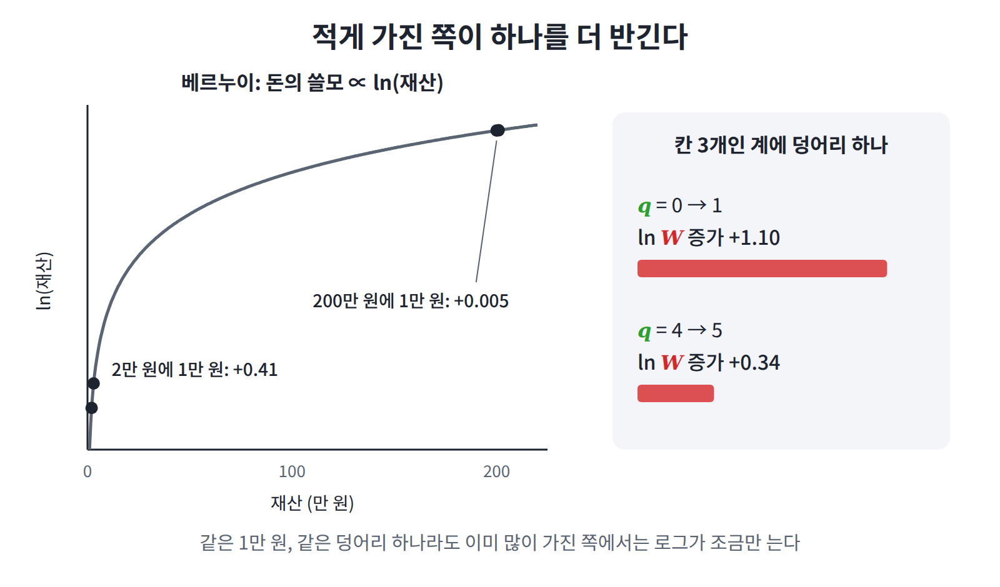
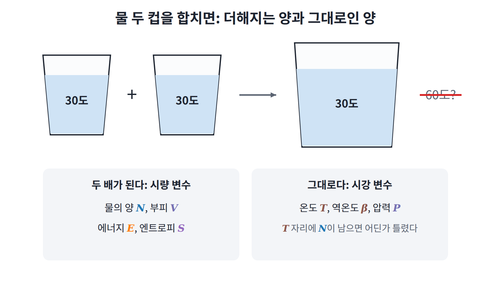
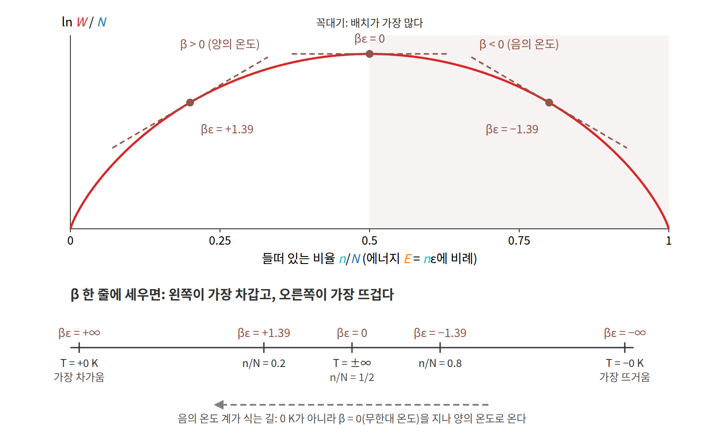
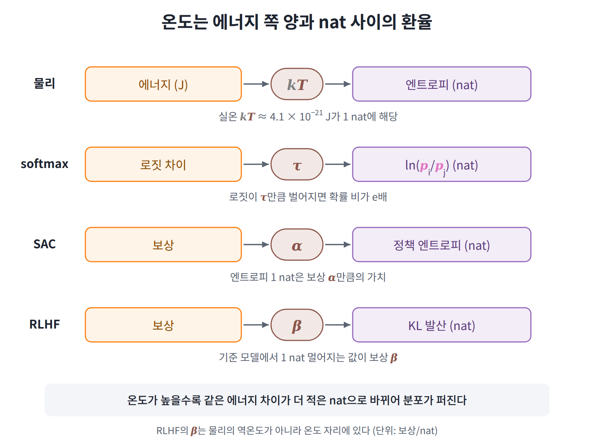
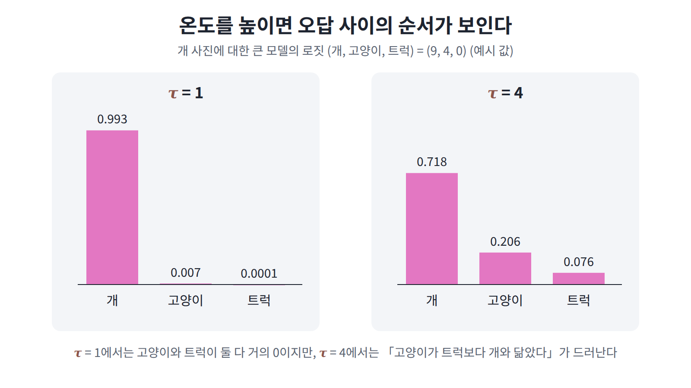
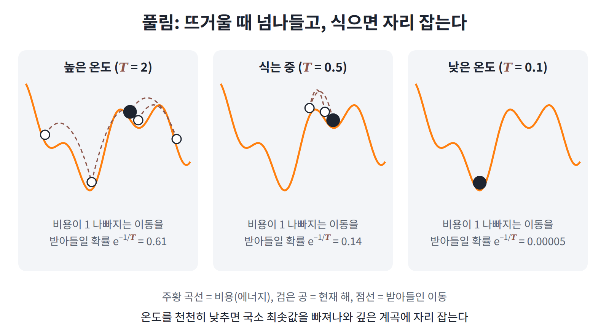

3장 — 온도
이 장의 물음
LLM에서 답을 뽑을 때 temperature를 올리면 답이 다양해지고, 내리면 늘 같은 답에 가까워진다. 강화학습의 SAC에는 α라는 계수가, LLM을 사람 선호에 맞추는 RLHF에는 β라는 계수가 있는데, 논문들은 이것들도 온도라고 부른다. 하는 일도 생김새도 제각각인 계수들에 왜 하나같이 물리의 「온도」라는 이름이 붙었을까? 이 물음에 답하려면 먼저 물리에서 온도가 정확히 무엇인지부터 물어야 한다. 우리는 일상에서 온도를 「뜨겁고 차가운 정도」로 이해하지만, 그것이 무엇을 재는 양인지 말하라고 하면 막막해진다.
이 장은 다음 물음에 차례로 답한다.
- 온도계 없이 온도를 정할 수 있을까?
- 맞닿은 두 물체가 에너지를 주고받다가 멈추는 자리는 무엇이 정할까?
- 열은 왜 뜨거운 쪽에서 차가운 쪽으로만 흐를까?
- 무한히 뜨거운 것보다 더 뜨거운 것이 있을 수 있을까?
- ML의 여러 「온도」는 물리의 온도와 같은 일을 하고 있을까?
역사: 온도계는 있었지만 온도의 정의는 없었다
온도는 오랫동안 "온도계가 가리키는 값"으로만 정의되었고, 온도계가 정확히 무엇을 재고 있는지 설명할 수 있는 사람은 없었다. 그런데도 온도계는 만들어졌고 눈금도 정해졌다. 그 과정을 따라가 보면 무엇이 문제였는지가 드러난다.
18세기에 들어 파렌하이트는 수은 온도계와 그 눈금을 내놓았고(1720년대), 셀시우스는 1742년 물의 어는점과 끓는점 사이를 100칸으로 나누었다. 흥미롭게도 셀시우스의 원래 눈금은 끓는점이 0, 어는점이 100이었고, 지금처럼 뒤집힌 것은 그가 세상을 떠난 뒤의 일이다.

눈금이 정해지자 곧 곤란한 문제가 드러났다. 수은 온도계와 알코올 온도계를 0도와 100도에 똑같이 맞춰 두어도, 그 사이 온도에서는 두 온도계가 조금씩 다른 값을 가리켰던 것이다. 두 액체가 온도에 따라 늘어나는 비율이 일정하지 않기 때문인데, 그렇다면 어느 쪽이 “진짜” 온도인가? 온도를 온도계로 정의하는 한 이 질문에는 답이 없다.

켈빈은 1848년 이 문제를 피하기 위해 특정 물질에 기대지 않는 온도 눈금을 제안했다. 그는 카르노의 열기관 효율을 이용해 온도를 정의했고, 이것이 오늘날 쓰는 켈빈(K) 눈금이 되었다. 다만 이 정의도 "가상의 열기관"이라는 장치를 거쳐야만 온도에 닿는다는 점에서, 온도 자체가 무엇인지에 대한 답은 아니었다.

온도계가 쓸모 있는 이유도 한번 따져 볼 만하다. 물체 A가 C와 열평형이고 B도 C와 열평형이면, A와 B도 서로 열평형이다. 이 사실 덕분에 온도계 C 하나로 서로 떨어져 있는 두 물체를 비교할 수 있다. 너무 당연해 보여서 제1법칙과 제2법칙보다 늦은 1930년대에야 이름이 붙었는데, 그 둘보다 더 기본적이라는 뜻에서 영번째 법칙이라 불리게 되었다.
그렇다면 온도계도 열기관도 없이, 물체 안에서 에너지가 나뉘는 방식만 보고 온도를 정할 수는 없을까? 그렇게 정한 온도라면 영번째 법칙과 열이 흐르는 방향도 설명할 수 있을까?
작은 문제: 에너지 덩어리 6개 나눠 갖기
뜨거운 물체와 차가운 물체를 맞닿게 두면 에너지가 한동안 오가다가 어느 순간 멈춘 것처럼 보인다. 이때 실제로 관찰되는 에너지 분배는 무엇이 정할까? 통계역학의 답은 간단하다. 전체 경우의 수가 가장 많은 분배가 관찰된다. 이 답이 구체적으로 무엇을 뜻하는지, 가장 작은 예를 골라 직접 세어 보자.
여기서 말하는 에너지 덩어리는 "같은 크기로 나뉜 에너지 한 몫"이라고만 생각하면 된다. 에너지가 정확히 무엇인지는 다음 장에서 정의한다. 이 장에 필요한 성질은 두 가지뿐이다. 덩어리는 모두 크기가 같아서 어느 것이 어느 것인지 구별하지 않고, 두 물체 사이를 오가도 전체 개수는 늘거나 줄지 않는다.
모형: 칸에 에너지 덩어리 담기
고체 속 원자는 제자리에서 끊임없이 흔들린다. 아인슈타인은 1907년 이 흔들림의 에너지가 일정한 크기의 덩어리로만 오간다고 가정하고 고체의 성질을 계산했는데, 이 모형을 아인슈타인 고체 (Einstein solid)라고 부른다. 여기서는 물리적인 배경은 잠시 접어 두고, 덩어리를 칸에 나눠 담는 방법이 몇 가지인지 세는 문제로만 다뤄 보기로 하자.
칸이 N개 있고, 같은 크기의 에너지 덩어리 q개를 이 칸들에 나눠 담는다고 하자. 한 칸에는 덩어리가 몇 개든 들어갈 수 있다.
담는 방법의 수는 별 q개와 칸막이 N − 1개를 한 줄로 늘어놓는 방법의 수와 같다. 예를 들어 ★★|★|는 칸 3개에 덩어리를 각각 2개, 1개, 0개 담은 배치를 나타낸다. 결국 N + q − 1개의 자리 가운데 별이 들어갈 q자리를 고르는 문제이므로 다음을 얻는다.

두 계가 나눠 갖기
이제 칸이 3개씩인 계 A와 계 B가 맞닿아 있어서 덩어리를 주고받을 수 있다고 하자. 두 계가 가진 덩어리의 합은 6개로 고정되어 있으므로, A가 q_A개를 가지면 B는 6 − q_A개를 가지게 된다. 그리고 A가 덩어리를 담는 방법과 B가 담는 방법은 서로 독립이므로, 전체 경우의 수는 두 경우의 수의 곱이다.
| q_A | q_B | W_A | W_B | W_A × W_B | 확률 |
|---|---|---|---|---|---|
| 0 | 6 | 1 | 28 | 28 | 0.061 |
| 1 | 5 | 3 | 21 | 63 | 0.136 |
| 2 | 4 | 6 | 15 | 90 | 0.195 |
| 3 | 3 | 10 | 10 | 100 | 0.216 |
| 4 | 2 | 15 | 6 | 90 | 0.195 |
| 5 | 1 | 21 | 3 | 63 | 0.136 |
| 6 | 0 | 28 | 1 | 28 | 0.061 |
| 합 | 462 | 1 |
표 맨 아래의 합 462는 칸 6개에 덩어리 6개를 담는 방법의 수 W(6, 6)과 같다. 두 계를 하나의 큰 계로 보면 당연한 결과이므로, 계산이 맞았는지 확인하는 데 쓸 수 있다.
표에서 가장 흔한 분배는 3 : 3이다. 그러나 칸이 3개씩밖에 없는 작은 계에서는 그 확률이 21.6%에 그치고, 한쪽이 덩어리를 모두 가져가는 극단적인 경우도 양쪽을 합치면 12%나 된다. "가장 흔하다"와 “거의 언제나 그렇다” 사이에는 아직 거리가 있는 셈이다. 이 거리가 어떻게 좁혀지는지는 다음 절에서 계를 키워 보며 확인한다.
패턴: 기울기가 같아지는 곳에서 멈춘다
표를 보면 가장 흔한 분배가 3 : 3이라는 것은 알 수 있지만, 왜 하필 그곳인지는 아직 드러나지 않는다. 덩어리를 하나씩 옮겨 가며 경우의 수가 어떻게 변하는지 살펴보면 그 이유가 보인다.
한 덩어리씩 옮겨 보기
B에서 A로 덩어리 하나를 옮기면 A의 ln W는 늘고 B의 ln W는 줄어든다. 두 변화량 가운데 어느 쪽이 큰지를 비교하면, 그 덩어리를 옮기는 것이 전체 경우의 수를 늘리는지 줄이는지 알 수 있다.
| 현재 q_A | A가 하나 더 받을 때 ln W_A 증가 | B가 하나 잃을 때 ln W_B 감소 | 전체 ln W 변화 |
|---|---|---|---|
| 0 | 1.10 | 0.29 | +0.81 |
| 1 | 0.69 | 0.34 | +0.36 |
| 2 | 0.51 | 0.41 | +0.11 |
| 3 | 0.41 | 0.51 | −0.11 |
| 4 | 0.34 | 0.69 | −0.36 |
표에서 눈에 띄는 것은 덩어리를 적게 가진 계일수록 하나를 더 받았을 때 담는 방법이 크게 늘어난다는 점이다. 이미 많이 가진 계는 하나를 더 받아도 별로 늘지 않는다. 그러므로 덩어리는 "받았을 때 경우의 수가 더 많이 늘어나는 쪽"으로 옮겨 가고, 두 증가량이 같아지는 q_A = 3 근처에서 더 이상 옮겨 갈 이유가 없어진다.
돈에도 비슷한 현상이 있다. 통장 잔고가 적은 사람에게 만 원은 큰 돈이지만 부자에게는 별것 아니다. 다니엘 베르누이는 1738년 이를 "돈의 쓸모는 재산의 로그에 비례한다"는 가정으로 설명했는데, 에너지 덩어리가 경우의 수의 로그에 대해 하는 일도 이와 같다.


큰 계에서는 날카로워진다
이제 계를 키워 보자. A의 칸을 300개, B의 칸을 200개로 늘리고 덩어리 100개를 나눠 갖게 하면 다음과 같은 결과를 얻는다.
| 값 | |
|---|---|
| 가장 흔한 q_A | 60 |
| q_A의 표준편차 | 약 5.4 |
| 50 ≤ q_A ≤ 70일 확률 | 약 95% |
| q_A ≤ 40일 확률 | 약 0.02% |
| q_A = 60에서 A의 증가량 / B의 증가량 | 1.775 / 1.767 |
여기서 두 가지를 읽어낼 수 있다. 첫째, 분배는 반반이 아니라 60 : 40이고, 이는 칸 수의 비 300 : 200과 같다. 그러니 평형에서 같아지는 것은 에너지 총량이 아니라 표 마지막 줄의 증가량이다. 둘째, 계가 커지자 분배가 거의 하나로 정해졌다. 칸이 3개일 때는 가장 흔한 분배가 21.6%에 불과했지만, 여기서는 60 근처를 벗어난 분배가 거의 일어나지 않는다. 칸이 수십억의 수십억 배인 실제 물체에서는 이 흔들림이 어떤 측정으로도 볼 수 없을 만큼 작아진다.
연속으로 쓰면
덩어리가 충분히 많으면 "하나를 옮길 때의 변화"를 미분으로 바꿔 쓸 수 있다. 전체 에너지 E = E_A + E_B가 고정되어 있을 때 ln W_A(E_A) + ln W_B(E − E_A)를 E_A로 미분해 0으로 놓으면 다음을 얻는다.
이렇게 평형에서 두 계가 반드시 같은 값을 갖는 양이 하나 나왔다. 그런데 우리는 경험으로 "평형에서 같아지는 것"을 이미 하나 알고 있다. 바로 온도다.
정의: 온도는 에너지와 경우의 수의 환율
평형에서 같아지는 그 기울기에 이제 이름을 붙이자. 로그 경우의 수를 에너지로 미분한 값을 역온도 β (경우의 수 증가율, inverse temperature)라 하고, 그 역수를 온도 T (에너지와 경우의 수의 환율, temperature)라 한다.
β는 에너지를 조금 더 넣었을 때 ln W가 늘어나는 비율이므로, 그 역수인 kT는 "경우의 수를 e배로 늘리는 데 드는 에너지"라고 읽을 수 있다. 에너지를 경우의 수로 바꾸는 환율인 셈이다. 이때 부피와 입자 수는 고정한 채로 미분하므로, 고정한 것을 밝혀 쓰면 1/T = (∂S/∂E)_{V,N}이다.

물론 이름을 붙였다고 해서 이 양이 온도계가 재는 온도와 같은 것이 되지는 않는다. 같다고 믿을 만한 근거가 있어야 하는데, 여기서는 세 가지를 살펴본다.
(1) 평형에서 같아진다
첫 번째 근거는 앞 절에서 이미 보았다. 두 계가 평형에 이르면 β가 같아진다. 더구나 "같다"는 관계는 이행적이어서, A와 C의 β가 같고 B와 C의 β가 같으면 A와 B의 β도 같다. 영번째 법칙을 따로 가정할 필요 없이 정의에서 바로 얻는 것이다.
(2) 열은 뜨거운 쪽에서 차가운 쪽으로 흐른다
두 번째 근거는 열의 방향이다. 평형이 아닌 두 계 A, B 사이에서 에너지 δE가 A에서 B로 간다고 하면, 전체 로그 경우의 수는 다음만큼 변한다.
실제로 일어나는 것은 경우의 수가 늘어나는 변화이므로, 에너지는 β_B > β_A일 때에만 A에서 B로 간다. 다시 말해 에너지는 β가 작은 쪽, 곧 온도가 높은 쪽에서 β가 큰 쪽, 곧 온도가 낮은 쪽으로 흐른다. "열은 뜨거운 곳에서 차가운 곳으로 흐른다"는 오래된 경험 법칙이 경우의 수를 세는 일에서 나온 것이다.
(3) 클라우지우스가 Q를 T로 나눈 이유
세 번째 근거는 열역학의 측정값과의 일치다. 어떤 계가 부피를 바꾸지 않은 채 열 Q를 조금 받으면 그 에너지가 Q만큼 늘어나므로, 엔트로피는 다음만큼 늘어난다.
클라우지우스가 열기관의 측정으로 찾아낸 Q/T라는 양이, 로그 경우의 수를 에너지로 미분한 값이 온도의 역수라는 정의에서 정확히 나오는 것이다. 예를 들어 400K 물체에서 300K 물체로 열 1000J이 가면 엔트로피는 −1000/400 + 1000/300 ≈ +0.83 J/K만큼 늘어나는데, 이는 (2)의 계산을 에너지 단위로 쓴 것과 같다.
kT는 얼마나 큰가
환율이 얼마인지 실제 숫자로 확인해 두면 감을 잡기 쉽다.
| 값 | 실온(300K)에서 |
|---|---|
| kT (분자 하나) | 약 4.1 × 10⁻²¹ J |
| kT (전자볼트) | 약 0.026 eV |
| kT × 아보가드로수 (1몰) | 약 2.5 kJ/mol |
탄소와 탄소의 결합을 끊는 데는 대략 350 kJ/mol이 드는데, 이는 실온 kT의 약 140배다. 실온에서 플라스틱이 저절로 분해되지 않는 것은 이 때문이다. 이처럼 어떤 변화가 열만으로 저절로 일어날 수 있는지는, 그 변화에 필요한 에너지가 kT의 몇 배인지를 보고 가늠한다.
일반화: 이상기체
지금까지 온도의 정의는 덩어리를 칸에 담는 고체에서 끌어냈다. 그렇다면 같은 정의를 기체에 적용하면 무엇이 나올까? 화학 시간에 외웠던 기체 법칙이 여기서 다시 나온다면, 이 정의를 믿을 근거가 하나 더 생기는 셈이다.
이상기체는 서로 부딪히는 것 말고는 힘을 주고받지 않는 입자 N개로 이루어진 기체다. 그 엔트로피는 다음 꼴이라는 것이 알려져 있는데, 여기서는 유도하지 않고 결과만 빌려 쓴다.
이를 에너지로 미분하면 온도가 나온다.
기체 원자 하나의 평균 운동에너지가 (3/2)kT, 실온에서 약 6.2 × 10⁻²¹ J라는 뜻이다. 다시 말해 기체의 온도는 원자들이 평균적으로 얼마나 빨리 움직이는가와 직접 연결되어 있다.
부피에 대해서도 같은 논리를 그대로 쓸 수 있다. 두 기체 사이에 자유롭게 움직이는 피스톤을 두고 부피를 주고받게 하면, 평형에서는 이번에는 ∂S/∂V가 같아진다. 이 값을 P/T로 정의하면(P는 압력) 다음을 얻는다.
화학 시간에 외운 PV = nRT(n은 몰 수, R은 아보가드로수에 k를 곱한 값)가 결국 경우의 수를 세는 일에서 나온 것이다.
일반화: 시강 변수
그런데 이상기체의 식에는 입자 수 N이 곳곳에 들어 있다. 그렇다면 기체를 두 배로 늘리면 온도도 두 배가 될까? 30도 물 한 컵과 30도 물 한 컵을 합치면, 물의 양은 두 컵이 되지만 온도는 30도에서 변하지 않는다. 이처럼 계를 합칠 때 더해지는 양(E, V, N, S)을 시량 변수(extensive variable)라 하고, 합쳐도 그대로인 양(T, P, β)을 시강 변수 (intensive variable)라 한다.
온도는 두 시량 변수의 비율인 ∂S/∂E로 정의되므로 시강 변수가 된다. 이 사실은 계산을 검산하는 데 유용하다. 어떤 계산 결과에서 온도 자리에 입자 수 N이 남아 있다면, 계를 두 배로 키울 때 온도도 두 배가 된다는 뜻이므로 어딘가 틀린 것이다.

일반화: 2준위계
지금까지 만난 아인슈타인 고체와 이상기체는 에너지를 넣을수록 담는 방법의 수가 끝없이 늘었는데, 에너지를 받아 줄 자리가 위로 열려 있었기 때문이다. 그런데 입자 하나가 가질 수 있는 에너지가 두 값뿐이어서, 모든 입자가 높은 쪽에 올라가면 더는 에너지를 받을 수 없는 계도 있다. 온도를 「경우의 수가 에너지에 따라 늘어나는 기울기」로 정의했으니, 이렇게 에너지에 천장이 있는 계에서는 그 기울기가 어떻게 되는지 확인해 볼 필요가 있다.
이런 계는 생각보다 흔하다. 아래 표는 두 상태만 신경 쓰면 되는 대표적인 경우들이다.
| 실제 계 | 두 상태 | 두 상태의 에너지 차 ε | 어디서 만나나 |
|---|---|---|---|
| 자기장 속 전자나 원자핵의 스핀 | 자기장과 같은 방향 / 반대 방향 | 자기장 세기에 비례 | 상자성체의 자화, MRI |
| 원자의 두 에너지 준위 | 바닥상태 / 들뜬 상태 | 원자가 내놓는 빛 알갱이(광자) 하나의 에너지 | 레이저, 원자시계 |
| 초전도 큐비트 | 0 / 1 | 마이크로파 광자 하나의 에너지 | 양자컴퓨터 |
| 이징 모형, 볼츠만 머신의 유닛 | 꺼짐 / 켜짐 (또는 −1 / +1) | 유닛 하나를 켤 때 드는 에너지 | ML의 에너지 기반 모형 |
표의 예들에서 세부를 걷어 내면 같은 모형이 남는다. 입자 N개가 각각 에너지 0 또는 ε만 가질 수 있는 계다. 이런 계를 2준위계 (two-level system)라 한다.
2준위계가 물리의 중심에 들어온 것은 20세기 초다. 1895년 피에르 퀴리는 자석에 약하게 끌리는 물질(상자성체)의 자화가 온도에 반비례한다는 것을 측정했고(퀴리 법칙), 이 법칙은 뒤에 2준위계로 가장 깔끔하게 설명된다. 1922년 슈테른과 게를라흐가 은 원자의 흐름을 불균일한 자기장에 통과시키자, 흐름이 연속으로 퍼지지 않고 딱 두 갈래로 갈라졌다. 원자가 품은 작은 자석의 방향, 곧 스핀(spin)이 자기장에 대해 두 방향만 가질 수 있다는 뜻이었다.
같은 해 쇼트키는 이런 두 상태를 가진 결정의 열용량이 특정 온도에서 봉우리를 그린다는 것을 보였다(쇼트키 이상). 1940년대에 핵자기공명(NMR)이 개발되면서 원자핵의 스핀은 실험실에서 마음대로 뒤집을 수 있는 2준위계가 되었고, 음의 온도가 처음 실험에 나타난 것도 바로 이 원자핵 스핀에서였다.
2준위계는 에너지에 천장이 있는 계 가운데 가장 단순해서, 경우의 수를 이항계수 하나로 셀 수 있다. 그렇다면 이 계에 온도의 정의 ∂ln W/∂E를 그대로 적용하면 어떤 값이 나올까?
일반화: 음의 온도
2준위계에 에너지를 조금씩 넣어 가면 β는 어떻게 변할까? n개가 ε를 가지면 E = nε이고 경우의 수는 W = C(N, n)이므로, 스털링 근사를 써서 미분하면 다음을 얻는다(유도는 대화 연습 문제 2).
| 들떠 있는 비율 n/N | β | 온도 T |
|---|---|---|
| 0에 가까움 | +∞에 가까움 | 0K에 가까움 |
| 1/2 미만 | 양수 | 양수 |
| 정확히 1/2 | 0 | ∞ |
| 1/2 초과 | 음수 | 음수 |
| 1에 가까움 | −∞에 가까움 | 0에 가까운 음수 |
입자가 절반 넘게 들떠 있으면 이상한 일이 생긴다. 에너지를 더 넣을수록 들뜨는 입자를 고를 수 있는 가짓수가 오히려 줄어들기 때문이다. 그러면 ∂S/∂E가 음수가 되고, 정의에 따라 온도도 음수가 된다. 기체에서는 이런 일이 일어나지 않는데, 운동에너지에는 상한이 없어서 에너지를 넣을수록 배치가 항상 늘어나기 때문이다. 음의 온도는 2준위계처럼 에너지에 천장이 있는 계에서만 나타난다.
그렇다면 음의 온도는 절대영도보다 차갑다는 뜻일까? 그렇지 않다. β가 음수인 계는 β가 양수인 어떤 계보다도 β가 작으므로, 두 계를 맞닿게 하면 에너지는 음의 온도 쪽에서 빠져나간다. 즉 음의 온도는 무한대 온도보다도 뜨겁다. 1951년 퍼셀과 파운드는 원자핵의 스핀을 이용해 이런 상태를 실제로 만들었고, 레이저 역시 들떠 있는 원자가 절반을 넘는 상태(밀도 반전)를 만들어 빛을 증폭한다.
표를 β로 읽으면 +∞에서 0을 지나 −∞까지 끊김 없이 이어지지만, T로 읽으면 +∞에서 −∞로 갑자기 뛰어넘는다. 물리와 ML의 식에 T보다 β가 더 자주 나오는 것은 이처럼 β가 더 자연스러운 변수이기 때문이기도 하다.
음의 온도는 처음 들으면 말장난처럼 들린다. 아래에서는 같은 현상을 여러 방향에서 다시 읽어 보면서, 이것이 정의에서 생긴 부작용이 아니라 실제로 측정되는 성질이라는 것을 확인하자.
경우의 수의 언덕. 2준위계의 ln W를 에너지에 따라 그리면 가운데가 볼록한 언덕이 된다. 들떠 있는 입자가 하나도 없을 때와 모두 들떠 있을 때는 배치가 한 가지뿐이고, 절반이 들떠 있을 때 배치가 가장 많기 때문이다. β는 이 언덕의 기울기이므로 왼쪽 비탈에서는 양수, 꼭대기에서는 0, 오른쪽 비탈에서는 음수다. 음의 온도란 결국 「언덕의 오른쪽 비탈에 서 있는 상태」다.

뒤집힌 분포. 앞의 β 식을 들떠 있는 비율에 대해 풀면 다음을 얻는다.
β가 양수이면 e^(−βε)가 1보다 작아서 위 칸에 있는 입자가 아래 칸보다 적고, 이것이 우리가 보통 보는 모습이다. β = 0이면 비율이 정확히 1 : 1이 되고, β가 음수이면 위 칸이 더 붐빈다. 음의 온도는 「에너지가 높은 상태가 낮은 상태보다 더 많이 차 있는」 뒤집힌 분포이고, 레이저에서 말하는 밀도 반전이 바로 이것이다.
둘째 식은 ML에서 익숙한 시그모이드 σ(x) = 1/(1 + e^(−x))와 같은 꼴이어서 n/N = σ(−βε)로 쓸 수 있다. 로지스틱 회귀에서 로짓 하나가 「켜질 확률」을 정하듯, 여기서는 −βε가 「들뜸 확률」의 로짓 노릇을 한다. β의 부호를 뒤집는 것은 이 로짓의 부호를 뒤집는 것과 같아서, 음의 온도는 에너지가 높은 쪽을 선호하도록 판정이 거꾸로 선 상태다. softmax의 τ를 음수로 두면 로짓이 가장 작은 후보가 가장 자주 뽑히는 것도 같은 현상이다.
뜨겁지만 질서 있다. 흔히 온도가 높을수록 더 무질서하다고 생각하지만, 엔트로피가 가장 큰 곳은 언덕 꼭대기, 곧 β = 0인 무한대 온도다. 음의 온도 쪽으로 더 나아갈수록 입자가 위 칸에 몰려 배치의 가짓수가 줄어드므로, 음의 온도 상태는 무한대 온도보다 뜨겁지만 더 질서 있다. 그러므로 「뜨겁다」는 무질서의 정도가 아니라 「에너지를 내놓으려는 정도」를 뜻한다고 읽어야 한다.
가열해서는 도달할 수 없다. 양의 온도를 가진 물체를 아무리 뜨겁게 달궈 2준위계에 닿게 해도, 2준위계는 그 물체와 β가 같아질 때까지만 에너지를 받는다. 양의 β는 아무리 작아도 0보다 크므로 들떠 있는 비율은 1/2에 다가갈 뿐 넘지 못한다. 그래서 음의 온도를 만들려면 열을 넣는 대신 상태를 직접 뒤집어야 한다. 퍼셀과 파운드는 원자핵 스핀이 자기장 쪽으로 정렬된 상태에서 자기장의 방향을 순식간에 반대로 돌려, 다수가 에너지가 높은 방향에 놓이게 만들었다. 레이저는 셋째 에너지 준위를 거쳐 원자를 위 칸으로 퍼 올리는 방식(펌핑)으로 같은 일을 한다.
식을 때는 무한대 온도를 지난다. 실제 결정 속 원자핵 스핀은 원자들의 진동(격자)과도 에너지를 주고받는데, 격자 진동에는 에너지 상한이 없으므로 결국에는 양의 온도로 돌아간다. 다만 퍼셀과 파운드가 쓴 플루오린화리튬(LiF) 결정에서 스핀끼리는 10만분의 1초 안팎에 서로 평형을 이루었지만, 격자와 평형을 이루는 데는 몇 분이 걸렸다. 그 몇 분 동안 스핀 무리는 자기들끼리는 평형인 음의 온도 상태로 있었고, 에너지를 격자에 조금씩 내주며 식었다. 이때 온도는 절대영도를 지나는 것이 아니라 β = 0, 곧 무한대 온도를 지나 양의 온도로 돌아왔다(위 그림 아래쪽의 점선 화살표).
기체도 음의 온도가 될 수 있을까. 보통의 기체는 운동에너지에 상한이 없어서 음의 온도가 될 수 없다. 그런데 2013년 독일 민헨의 연구진(Braun 외)은 칼륨 원자를 레이저 빛으로 만든 격자(광격자)에 가두어, 원자가 움직여서 가질 수 있는 에너지에도 상한이 생기게 만들었다. 이 조건에서 원자 기체는 절대영도 「아래」로 수 나노켈빈(10억분의 수 켈빈), 곧 음의 온도에 도달했다. 음의 온도를 가르는 것은 입자의 종류가 아니라 에너지에 천장이 있느냐라는 것을 보여 준 실험이다.
정의를 두고 벌어진 논쟁. 1956년 램지는 퍼셀과 파운드의 실험을 바탕으로, 음의 온도에서도 열역학 법칙들을 그대로 쓸 수 있도록 이론을 정리했다. 그러나 음의 온도는 엔트로피를 어떻게 정의하느냐에 달려 있어서 논쟁이 끝난 것은 아니었다. 이 장처럼 「에너지가 정확히 E인 배치의 수」를 세면 언덕이 생겨 음의 온도가 나오지만, 「에너지가 E 이하인 배치의 수」를 세면 그 수는 에너지와 함께 늘기만 하므로 온도가 늘 양수가 된다. 2014년 후자가 맞다는 주장(Dunkel과 Hilbert)이 나오면서 한동안 논쟁이 이어졌는데, 이 장의 정의를 지지하는 쪽의 주된 근거는 두 계를 맞닿게 했을 때 열이 어느 쪽으로 흐를지를 이 정의의 온도가 바르게 알려 준다는 점이다. 온도가 쓸모 있는 이유로 이 장에서 가장 먼저 꼽은 바로 그 성질이다.
보기: 코드
앞에서 손으로 세어 본 결과를 이번에는 코드로 확인해 보자. 아래 코드는 칸 수와 덩어리 수를 정해 주면 가능한 모든 분배의 확률을 계산하고, 분배가 어디에 모이는지, 그리고 그곳에서 두 계의 β가 정말 같아지는지를 출력한다. 칸 수와 덩어리 수를 바꿔 가며 돌려 보면 분배가 모이는 자리가 어떻게 달라지는지 직접 볼 수 있다. 칸 수와 덩어리 수를 슬라이더로 바꿔 보는 위젯은 「연속으로 쓰면」 절에 있다.
from math import comb, log
def W(N, q): # 칸 N개에 덩어리 q개를 담는 방법의 수
return comb(q + N - 1, q)
def beta(N, q): # 덩어리 하나를 더 받을 때 ln W 증가량
return log(W(N, q + 1)) - log(W(N, q))
NA, NB, q = 300, 200, 100
total = sum(W(NA, a) * W(NB, q - a) for a in range(q + 1))
prob = [W(NA, a) * W(NB, q - a) / total for a in range(q + 1)]
best = max(range(q + 1), key=lambda a: prob[a])
print(best) # 60
print(sum(prob[50:71])) # 약 0.95
print(beta(NA, best), beta(NB, q - best)) # 약 1.775, 1.767
그렇다면 계를 더 키우면 어떻게 될까? NA, NB, q를 10배씩 키워 보면 분배의 폭이 상대적으로 좁아지는 것을 볼 수 있다. 다만 이렇게 키우면 이항계수가 매우 커지므로, W를 직접 구하는 대신 ln W를 math.lgamma로 계산하는 것이 좋다.
ML에서 만나는 곳: 온도는 환율이다
ML에서 "온도"라는 이름이 붙은 계수나 그 역수는 겉모습은 제각각이어도 대부분 같은 일을 한다. 바로 에너지처럼 쓰이는 양(로짓, 보상, 손실)과 엔트로피(nat) 사이의 환율을 정하는 일이다. 아래에서는 무엇이 움직이는지에 따라 세 가지 경우를 차례로 살펴보자.

softmax의 온도 (움직이는 것: 분포에서 뽑는 샘플)
먼저 가장 익숙한 softmax부터 보자. 온도 τ가 있는 softmax pᵢ ∝ e^(zᵢ/τ)에서 두 후보의 확률 비를 로그로 쓰면 다음과 같다.
이 식을 읽어 보면, 로짓 차이가 τ만큼 벌어질 때 확률 비는 1 nat, 곧 e배가 된다. 다시 말해 τ는 "로짓 몇 단위가 1 nat인가"를 정하는 환율이다. 물리에서 kT가 "에너지 몇 줄이 1 nat인가"를 정하는 것과 같은 자리에 있는 셈이다.
실제 숫자로 확인해 보자. 로짓 z = (2, 1, 0)에 대해 온도를 바꿔 가며 계산하면 다음과 같다.
| τ | 확률 | 엔트로피 (nat) | 유효 후보 수 e^H |
|---|---|---|---|
| 0.5 | 0.867, 0.117, 0.016 | 0.44 | 1.55 |
| 1 | 0.665, 0.245, 0.090 | 0.83 | 2.30 |
| 2 | 0.506, 0.307, 0.186 | 1.02 | 2.77 |
| → 0 | 1, 0, 0 (argmax) | 0 | 1 |
| → ∞ | 1/3, 1/3, 1/3 | ln 3 ≈ 1.10 | 3 |
표에서 보듯 온도를 올리면 같은 로짓 차이가 더 적은 nat으로 환산되므로 분포가 퍼지고, 반대로 온도를 낮추면 확률이 가장 큰 로짓에 모인다. LLM에서 샘플링할 때 조절하는 temperature가 바로 이 τ다.
높은 온도가 쓸모 있는 예로 지식 증류 (knowledge distillation, Hinton 외 2015)가 있다. 지식 증류에서는 큰 모델의 출력을 높은 온도로 펼쳐서 작은 모델에게 가르친다. 왜 굳이 온도를 높일까? τ = 1에서는 오답들의 확률이 거의 0이라서 그 사이의 순서가 잘 보이지 않는다. 이를테면 개 사진이 고양이와는 조금 닮았고 트럭과는 닮지 않았다는 정보가 그렇다. 온도를 높이면 이렇게 묻혀 있던 "오답 사이의 순서"가 드러난다.

SAC의 α와 RLHF의 β (움직이는 것: 학습되는 매개변수)
이번에는 샘플이 아니라 학습되는 매개변수가 움직이는 경우를 보자. 강화학습의 SAC(Haarnoja 외 2018)는 보상만 최대화하지 않고, 보상과 정책의 엔트로피를 함께 최대화한다.
여기서 α는 논문에서도 temperature라고 부르는데, 식을 보면 그 이유를 알 수 있다. α는 "엔트로피 1 nat은 보상 α만큼의 가치가 있다"는 환율이기 때문이다. 그러므로 α가 크면 이것저것 해 보는 탐색을 중시하고, α가 작으면 보상을 우선한다.
LLM의 RLHF에서도 같은 구조가 나타난다. RLHF는 보상을 높이되, 학습하는 모델이 기준 모델에서 너무 멀어지지 않게 한다.
이때 β는 "기준 모델에서 1 nat 멀어지는 데 보상 β를 낸다"는 환율로 읽을 수 있다. 다시 말해 β의 단위는 보상/nat이다. 그러므로 보상 모델의 출력 범위를 바꾸면, 이를테면 보상을 10배로 키우면 β도 같이 바꿔야 같은 학습이 된다.
시뮬레이티드 어닐링 (움직이는 것: 인위적으로 만든 물리계)
마지막은 최적화를 위해 일부러 만든 물리계가 움직이는 경우다. 대장간에서는 금속을 달군 뒤 천천히 식혀서 단단하고 고른 결정을 얻는데, 이것을 풀림(annealing)이라 한다. Kirkpatrick, Gelatt, Vecchi(1983)는 이 과정을 최적화에 옮겨 와서, 최적화 문제의 비용 함수를 에너지로 보고 온도를 높게 시작해 천천히 낮추는 탐색법을 제안했다. 온도가 높을 때는 비용이 조금 나빠지는 이동도 받아들이므로 국소 최솟값을 빠져나올 수 있고, 온도가 낮아지면 좋은 계곡에 자리 잡게 된다. 이 방법은 외판원 문제나 칩 배치 같은 잘 알려진 탐색 문제에 오랫동안 쓰였다.

부호 하나
물리와 ML 사이를 오갈 때 주의할 점이 하나 있다. 물리에서는 에너지가 낮을수록 선호되지만, ML에서는 로짓과 보상이 높을수록 선호된다. 그러므로 두 세계의 식을 옮겨 적을 때는 에너지 = −로짓, 에너지 = −보상으로 부호를 뒤집어야 한다. 다만 온도는 양쪽 모두 양수다.
대화 연습
선생님의 수업. 김민준(학부 3학년, ML 강의 몇 개 수강)과 이서연(수학과 3학년)이 문제를 풀고, 선생님이 틀린 곳을 짚는다.
문제 1. 덩어리 6개는 어떻게 나뉘나
칸이 3개씩인 계 A, B가 에너지 덩어리 6개를 나눠 갖는다. A가 덩어리를 하나도 갖지 않을 확률과 3개를 가질 확률을 구하라.

김민준q_A가 0부터 6까지 7가지니까 둘 다 1/7 아니에요?

선생님같은 확률을 주는 건 미시상태예요, 거시상태가 아니라. q_A = 0이라는 거시상태 안에 미시상태가 몇 개 들어 있죠?

김민준A는 담는 방법이 1가지, B는 칸 3개에 6개를 담으니까 C(8, 6) = 28가지. 전체가 462니까 28/462 ≈ 0.061. q_A = 3이면 10 × 10 = 100, 100/462 ≈ 0.216이네요.

이서연민준아, 그거 주사위 두 개 합이랑 같은 실수다. 그런데 선생님, 그럼 에너지는 두 계가 똑같이 나눠 갖는 게 법칙이네요. 3 : 3이 가장 많으니까요.
선생님가장 흔한 건 맞지만 21.6%예요. 나머지 78%는 다른 분배예요. 법칙이라고 부르려면 거의 항상 그렇게 돼야 하죠. 칸을 300개, 200개로 늘리면 분배가 50~70 사이에 95% 모여요. 계가 커야 확률이 법칙처럼 보여요.

이서연그런데 그때 가장 흔한 건 60 : 40이잖아요. 똑같이 나누는 것도 아니네요.

선생님칸 수가 300 : 200이라서예요. 에너지 총량이 아니라, 덩어리 하나를 더 받을 때 ln W가 늘어나는 양이 같아지는 거예요. 양쪽 원자가 같은 종류라 칸당 덩어리가 같아진 겁니다.
문제 2. 2준위계의 β
입자 N개 중 n개가 에너지 ε를 갖는다(E = nε). ln C(N, n) ≈ N·h(n/N)을 이용해 β = ∂ ln W/∂E를 구하라. h(p) = −p ln p − (1−p) ln(1−p).

김민준n으로 미분하면 d/dn [N·h(n/N)] = ln((N − n)/n). 이게 β예요.

선생님무엇으로 미분하라고 했죠?
김민준E요. E = nε니까 ∂/∂E = (1/ε)∂/∂n. β = (1/ε) ln((N − n)/n).
선생님단위로 확인하는 습관을 들이세요. β는 ln W(순수한 수)를 에너지로 나눈 것이니 1/에너지 단위여야 해요. 1/ε가 그 역할이에요.

이서연저는 p = n/N로 두고 h(p)를 p로 미분했어요. β = (N/ε) ln((1 − p)/p)가 나왔어요.

선생님좋은 방법인데 dp/dn = 1/N을 빠뜨렸어요. 확인하는 방법이 하나 있어요. 입자 수도 두 배, 들떠 있는 수도 두 배로 계를 키우면 β는 어떻게 돼야 할까요?

이서연β가 온도의 역수니까… 같은 상태를 두 배로 키운다고 온도가 바뀌면 안 되죠. 제 식은 β가 두 배가 돼요. 틀렸네요.
선생님30도 물 두 컵을 합치면 60도가 되는 식을 쓴 셈이에요. 시강 변수 자리에 N이 남으면 어딘가 틀린 거예요.
문제 3. 열은 어느 쪽으로 가나
두 계의 역온도가 β_A = 2, β_B = 0.5 (단위: 1/에너지 단위)이다. 맞닿게 하면 에너지는 어느 쪽으로 가는가?
김민준β가 큰 A가 더 뜨겁죠. A에서 B로 가요.

선생님β가 무엇의 역수였죠?

김민준온도요. 아, β가 크면 온도가 낮아요. T_A = 0.5, T_B = 2. B가 뜨겁네요.
선생님결론만 외우지 말고 경우의 수로 확인해 봐요. B에서 A로 에너지 δ가 가면 ln W는?
김민준A는 2δ 늘고 B는 0.5δ 줄어요. 전체로 +1.5δ. 경우의 수가 늘어나니까 B에서 A로 가요.

선생님맞아요. β는 "에너지를 얼마나 반기는가"예요. 많이 반기는 쪽이 차가운 쪽이고, 에너지는 그쪽으로 가요.

이서연그럼 에너지는 두 계의 에너지가 같아질 때까지 가겠네요.
선생님40도 물이 200리터 든 욕조에 80도 커피 한 컵을 넣으면요? 에너지는 욕조가 비교도 안 되게 많아요.

이서연그래도 열은 커피에서 욕조로 가죠. 에너지가 같아지는 게 아니라 β가 같아질 때까지군요. 덩어리 문제에서 60 : 40이 나온 것도 같은 얘기고요.
문제 4. 이상기체의 두 편미분
이상기체의 엔트로피가 S = Nk ln V + (3/2)Nk ln E + (상수)일 때 (∂S/∂E){V,N}과 (∂S/∂V){E,N}을 구하고, 1/T와 P/T로 놓아 의미를 해석하라.
김민준서연아, (∂S/∂E)는 3/(2E) 맞지? Nk는 상수니까 미분하면 없어지잖아.
이서연곱해진 상수잖아. 더해진 거면 없어지는데 이건 남아. 3Nk/(2E)야.
김민준아, 맞다. 그럼 3Nk/(2E) = 1/T이니까 E = (3/2)NkT.
이서연저는 (∂S/∂V)에서 막혔어요. 부피가 늘면 기체가 식어서 E도 바뀌잖아요. 그걸 반영해야 하지 않나요?
선생님서연 학생, 해석학에서 f(x, y)를 x로 편미분할 때 y는 어떻게 했죠?
이서연고정했죠.
선생님아래첨자 _{E,N}이 그 뜻이에요. E와 N을 고정하고 V만 바꿨을 때예요. 실제 과정에서 E가 같이 변하는지는 이 편미분과 상관없어요. 그러니 Nk/V.
이서연수학에선 안 적는 아래첨자를 왜 물리에선 꼭 적어요?
선생님같은 S를 (E, V)의 함수로도, (T, V)의 함수로도 쓰기 때문이에요. 변수 묶음이 바뀌면 "V로 편미분"의 값도 달라질 수 있어요. 무엇을 고정했는지 적어야 식이 하나로 정해져요.
김민준과제에서 학습률 바꿔 가며 실험할 때 배치 크기는 고정하라고 했던 거랑 비슷하네요. 보고서에 "배치 크기 64 고정"이라고 안 쓰면 조교님이 감점했어요.
선생님좋은 비교예요. 아래첨자는 "이 실험에서 고정한 변수 목록"입니다. Nk/V = P/T로 놓으면?

이서연PV = NkT. 고등학교 때 외운 PV = nRT가 경우의 수에서 나오네.

김민준야, 그거 화학 시간에 외운 거 맞지?
이서연응. 이유는 오늘 처음 알았어.
문제 5. 음의 온도는 차가운가 뜨거운가
입자 10개짜리 2준위계 두 개가 있다. 계 X는 7개가, 계 Y는 2개가 들떠 있다. 문제 2의 식으로 β를 구하고, 맞닿게 하면 에너지가 어느 쪽으로 가는지 말하라.
김민준X는 β = (1/ε) ln(3/7) ≈ −0.85/ε. 음수네요. Y는 ln(8/2) ≈ 1.39/ε. 온도가 음수면 절대영도보다 차갑다는 거니까, Y에서 X로 가겠죠.
선생님온도 말고 경우의 수로 봐요. X에서 Y로 덩어리 하나가 가면 ln W는요? 문제 3과 같은 계산이에요.

김민준Y는 1.39 늘고, X는 β가 음수니까 에너지를 잃으면 오히려 0.85 늘어요. 둘 다 늘어요? 그럼 X에서 Y로 간다는 건데… X가 더 뜨겁다는 거네요.
선생님맞아요. X는 이미 절반 넘게 들떠 있어서, 에너지를 내놓으면 배치의 가짓수가 늘어요. 에너지를 내놓고 싶어 하는 상태예요. 음의 온도는 어떤 양의 온도보다도 뜨거워요.
이서연선생님, 그런데 이거 물리가 깨지는 거 아니에요? n을 4, 5, 6으로 늘리면 온도가 양의 무한대로 갔다가 갑자기 음의 무한대로 뛰잖아요. 함수가 이렇게 불연속인데 물리량이라고 할 수 있나요?
선생님β로 다시 봐요. n = 4, 5, 6이면?
이서연ln(6/4) ≈ 0.41, ln 1 = 0, ln(4/6) ≈ −0.41. …아, β는 0을 그냥 지나가네요. 끊긴 건 T = 1/β라는 변환이었고요.
선생님그래서 물리학자들은 β를 더 기본적인 변수로 봐요. β의 축에서 순서를 매기면 +∞(가장 차가움, 0K)에서 0(무한대 온도)을 지나 −∞(가장 뜨거움)까지 한 줄로 이어져요.
김민준그럼 방 안 공기도 에너지를 엄청 넣으면 음의 온도가 돼요?
선생님기체는 운동에너지에 상한이 없어서, 에너지를 넣을수록 배치가 항상 늘어요. β는 계속 양수예요. 음의 온도는 2준위계처럼 에너지에 천장이 있는 계에서만 가능해요. 레이저가 그런 계예요. 들떠 있는 원자를 절반 넘게 채워 두면, 그 에너지가 빛으로 한꺼번에 나와요.
이서연민준아, 네가 β를 온도처럼 읽어서 틀린 거, 문제 3이랑 똑같은 실수야.
문제 6. softmax 온도 버그
다음 코드는 로짓 z에서 온도 τ = 0.5로 샘플링하려는 코드다. 무엇이 틀렸는가?
p = torch.softmax(z, dim=-1)
p = p / tau
p = p / p.sum(dim=-1, keepdim=True)
김민준제가 과제에서 짠 코드랑 똑같은데요. 온도로 나눠주고 다시 정규화했어요.
선생님z = (2, 1, 0)으로 돌려 봐요. τ = 1일 때와 결과가 다른가요?
김민준(0.665, 0.245, 0.090)을 모두 2로 나누고 다시 정규화하면… 그대로네요. 모든 확률을 같은 수로 나누면 정규화에서 사라지니까요.
선생님온도는 확률이 아니라 로짓, 즉 에너지 쪽을 나눠야 해요. torch.softmax(z / tau, dim=-1). 그러면 (0.867, 0.117, 0.016)이 나와요.
이서연왜 하필 이름이 온도예요? 그냥 로짓의 배율이잖아요.
선생님첫 번째와 두 번째 후보의 확률 비를 로그로 재 봐요.
이서연ln(0.867/0.117) ≈ 2.0 nat이에요. 로짓 차이는 1이고요. 로짓 차이를 τ로 나눈 게 nat이 되네요.
선생님그게 kT가 하는 일과 같아요. 에너지를 nat으로 바꾸는 환율이에요. 그럼 τ = 0은요?
김민준0으로 나누면 에러죠. 극한으로는 가장 큰 로짓에 확률이 모두 가니까, 코드에서는 argmax로 따로 처리해야 하고요. 이게 β = ∞, 절대영도네요.
자주 하는 실수와 요약
자주 하는 실수
| 실수 | 나온 문제 | 바로잡는 법 |
|---|---|---|
| 거시상태에 같은 확률을 줌 | 1 | 같은 확률은 미시상태에만. 거시상태는 W에 비례 |
| 가장 흔한 분배를 법칙으로 봄 | 1 | 작은 계에서는 흔들림이 크다. 큰 계에서만 거의 확실해진다 |
| 평형에서 에너지가 같아진다고 봄 | 1, 3 | 같아지는 것은 β(온도). 욕조와 커피 한 컵 |
| n으로 미분하고 E로 바꾸지 않음 | 2 | 체인룰. β의 단위는 1/에너지 |
| dp/dn = 1/N 누락 | 2 | 계를 두 배로 키워도 β가 그대로인지 확인 |
| β가 큰 쪽이 뜨겁다고 봄 | 3, 5 | β는 온도의 역수. β가 큰 쪽이 에너지를 받는다 |
| 곱해진 상수를 미분에서 버림 | 4 | 더해진 상수만 사라진다 |
| 편미분에서 고정한 변수까지 움직임 | 4 | 아래첨자는 고정한 변수 목록 |
| 음의 온도는 절대영도보다 차갑다고 봄 | 5 | β 축에서는 −∞ 쪽이 가장 뜨겁다 |
| T의 불연속을 물리의 붕괴로 봄 | 5 | β는 0을 연속으로 지난다 |
| softmax 이후 확률을 τ로 나눔 | 6 | 온도는 로짓(에너지)을 나눈다 |
요약
에너지를 주고받는 두 계는 전체 경우의 수가 가장 큰 분배에서 멈추고, 그곳에서는 두 계의 β = ∂ ln W/∂E가 같다. 이 β를 역온도라 하고 그 역수를 온도로 정의하면, 영번째 법칙과 열이 뜨거운 쪽에서 차가운 쪽으로 흐른다는 사실, 그리고 클라우지우스의 ΔS = Q/T가 모두 이 정의에서 따라 나온다. 다시 말해 온도는 에너지와 경우의 수(nat) 사이의 환율이다. ML에서 만나는 softmax의 τ, SAC의 α, RLHF의 β도 로짓이나 보상과 nat 사이의 같은 환율이다. 끝으로 β는 음의 온도까지 끊김 없이 다룰 수 있으므로, T보다 더 기본적인 변수라고 할 수 있다.
막힌 곳
이제 우리는 두 큰 계가 에너지를 나눌 때 어디서 멈추는지, 그리고 온도가 무엇인지 말할 수 있다.
그런데 돌아보면 이 장에서 다룬 계는 모두 에너지가 덩어리로 오가는 이산적인 계였고, 이상기체의 엔트로피는 결과만 빌려 썼다. 그렇다면 원자의 위치와 속도처럼 연속으로 변하는 것들의 "경우의 수"는 어떻게 세야 할까? 더 근본적으로는, 우리는 아직 에너지가 무엇인지조차 정의한 적이 없다.